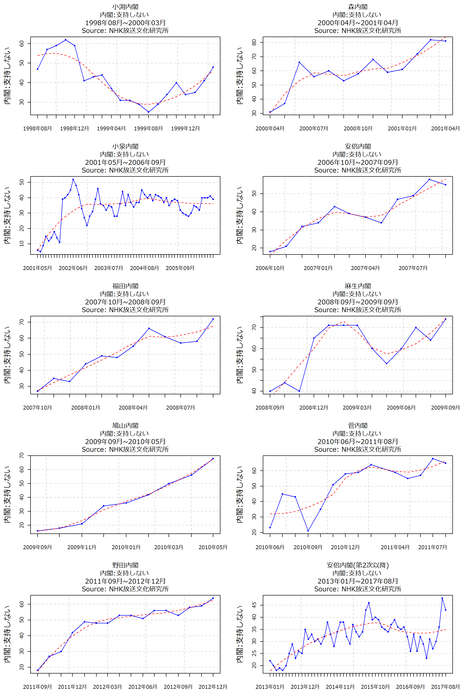

| 内閣 | 政権期間(または現職) | 初回(%) | 最終(%) | 最終 - 初回 | 最終の1回前(%) | 最低(%) | 最高(%) | nヶ月 | 変化率 |
|---|---|---|---|---|---|---|---|---|---|
| 小渕内閣 | 1998年08月~2000年03月 | 37 | 35 | -2 | 41 | 20 | 53 | 19 | -0.1 |
| 森内閣 | 2000年04月~2001年04月 | 39 | 7 | -32 | 9 | 7 | 39 | 12 | -2.7 |
| 小泉内閣 | 2001年05月~2006年09月 | 81 | 51 | -30 | 46 | 39 | 85 | 64 | -0.5 |
| 安倍内閣 | 2006年10月~2007年09月 | 65 | 34 | -31 | 29 | 29 | 65 | 11 | -2.8 |
| 福田内閣 | 2007年10月~2008年09月 | 58 | 20 | -38 | 33 | 20 | 58 | 11 | -3.5 |
| 麻生内閣 | 2008年09月~2009年09月 | 48 | 15 | -33 | 23 | 15 | 49 | 12 | -2.8 |
| 鳩山内閣 | 2009年09月~2010年05月 | 72 | 21 | -51 | 32 | 21 | 72 | 8 | -6.4 |
| 菅内閣 | 2010年06月~2011年08月 | 61 | 18 | -43 | 16 | 16 | 65 | 14 | -3.1 |
| 野田内閣 | 2011年09月~2012年12月 | 60 | 20 | -40 | 23 | 20 | 60 | 15 | -2.7 |
| 安倍内閣(第2次以降) | 2013年01月~2017年08月 | 64 | 39 | -25 | 35 | 35 | 66 | 55 | -0.5 |
| 就任 | 退任(又は現職) | 氏名 | 期間(日) |
|---|---|---|---|
| 1964-11-09 | 1972-07-07 | 佐藤栄作(1-3) | 2797 days |
| 1948-10-15 | 1954-12-10 | 吉田茂(2-5) | 2247 days |
| 2001-04-26 | 2006-09-26 | 小泉純一郎(1-3) | 1979 days |
| 1982-11-27 | 1987-11-06 | 中曽根康弘(1-3) | 1805 days |
| 2012-12-26 | 2017-08-07 | 安倍晋三(2,3) | 1685 days |
| 1901-06-02 | 1906-01-07 | Taro Katsura(1) | 1680 days |
| 1960-07-19 | 1964-11-09 | 池田勇人(1-3) | 1574 days |
| 1892-08-08 | 1896-09-18 | Hirobumi Ito(2) | 1502 days |
| 1957-02-25 | 1960-07-19 | 岸信介(1-2) | 1240 days |
| 1908-07-14 | 1911-08-30 | Taro Katsura(2) | 1142 days |
| 1918-09-29 | 1921-11-13 | Takashi Hara | 1141 days |
| 1941-10-18 | 1944-07-22 | Hideki Tojo | 1008 days |
| 1996-01-11 | 1998-07-30 | 橋本龍太郎(1-2) | 931 days |
| 1906-01-07 | 1908-07-14 | Kinmochi Saionji(1) | 919 days |
| 1914-04-16 | 1916-10-09 | Shigenobu Okuma(2) | 907 days |
| 1972-07-07 | 1974-12-09 | 田中角栄(1-2) | 885 days |
| 1980-07-17 | 1982-11-27 | 鈴木善幸 | 863 days |
| 1885-12-22 | 1888-04-30 | Hirobumi Ito(1) | 860 days |
| 1989-08-10 | 1991-11-05 | 海部俊樹(1-2) | 817 days |
| 1927-04-20 | 1929-07-02 | Giichi Tanaka | 804 days |
| 1932-05-26 | 1934-07-08 | Makoto Saito | 773 days |
| 1974-12-09 | 1976-12-24 | 三木武夫 | 746 days |
| 1954-12-10 | 1956-12-23 | 鳩山一郎(1-3) | 744 days |
| 1916-10-09 | 1918-09-29 | Masatake Terauchi | 720 days |
| 1976-12-24 | 1978-12-07 | 福田赳夫 | 713 days |
| 1898-11-08 | 1900-10-19 | Aritomo Yamagata(2) | 710 days |
| 1929-07-02 | 1931-04-14 | Osachi Hamaguchi | 651 days |
| 1991-11-05 | 1993-08-09 | 宮沢喜一 | 643 days |
| 1998-07-30 | 2000-04-05 | 小渕恵三 | 615 days |
| 1934-07-08 | 1936-03-09 | Keisuke Okada | 610 days |
| 1924-06-11 | 1926-01-30 | Takaaki Kato | 598 days |
| 1978-12-07 | 1980-07-17 | 大平正芳(1-2) | 588 days |
| 1937-06-04 | 1939-01-05 | Fumimaro Konoe(1) | 580 days |
| 1987-11-06 | 1989-06-03 | 竹下登 | 575 days |
| 1994-06-30 | 1996-01-11 | 村山富市 | 560 days |
| 1888-04-30 | 1889-10-25 | Kiyotaka Kuroda | 543 days |
| 1889-12-24 | 1891-05-06 | Aritomo Yamagata(1) | 498 days |
| 1896-09-18 | 1898-01-12 | Masayoshi Matsukata(2) | 481 days |
| 2011-09-02 | 2012-12-26 | 野田佳彦 | 481 days |
| 1911-08-30 | 1912-12-21 | Kinmochi Saionji(2) | 479 days |
| 1891-05-06 | 1892-08-08 | Masayoshi Matsukata(1) | 460 days |
| 1940-07-22 | 1941-10-18 | Fumimaro Konoe(2-3) | 453 days |
| 2010-06-08 | 2011-09-02 | 菅直人 | 451 days |
| 1922-06-12 | 1923-09-02 | Tomosaburo Kato | 447 days |
| 1926-01-30 | 1927-04-20 | Reijiro Wakatsuki(1) | 445 days |
| 1913-02-20 | 1914-04-16 | Gonnohyoe Yamamoto(1) | 420 days |
| 2000-04-05 | 2001-04-26 | 森喜朗(1-2) | 386 days |
| 1946-05-22 | 1947-05-24 | Shigeru Yoshida(1) | 367 days |
| 2006-09-26 | 2007-09-26 | 安倍晋三(1) | 365 days |
| 2007-09-26 | 2008-09-24 | 福田康夫 | 364 days |
| 2008-09-24 | 2009-09-16 | 麻生太郎 | 357 days |
| 1936-03-09 | 1937-02-02 | Koki Hirota | 330 days |
| 1947-05-24 | 1948-03-10 | Tetsu Katayama | 291 days |
| 2009-09-16 | 2010-06-08 | 鳩山由紀夫 | 265 days |
| 1993-08-09 | 1994-04-28 | 細川護煕 | 262 days |
| 1944-07-22 | 1945-04-07 | Kuniaki Koiso | 259 days |
| 1931-04-14 | 1931-12-13 | Reijiro Wakatsuki(2) | 243 days |
| 1939-01-05 | 1939-08-30 | Kiichiro Hiranuma | 237 days |
| 1900-10-19 | 1901-06-02 | Hirobumi Ito(4) | 226 days |
| 1945-10-09 | 1946-05-22 | Kijuro Shidehara | 225 days |
| 1948-03-10 | 1948-10-15 | Hitoshi Ashida | 219 days |
| 1921-11-13 | 1922-06-12 | Korekiyo Takahashi | 211 days |
| 1940-01-16 | 1940-07-22 | Mitsumasa Yonai | 188 days |
| 1898-01-12 | 1898-06-30 | Hirobumi Ito(3) | 169 days |
| 1931-12-13 | 1932-05-26 | Tsuyoshi Inukai | 165 days |
| 1924-01-07 | 1924-06-11 | Keigo Kiyoura | 156 days |
| 1939-08-30 | 1940-01-16 | Nobuyuki Abe | 139 days |
| 1945-04-07 | 1945-08-17 | Kantaro Suzuki | 132 days |
| 1898-06-30 | 1898-11-08 | Shigenobu Okuma(1) | 131 days |
| 1923-09-02 | 1924-01-07 | Gonnohyoe Yamamoto(2) | 127 days |
| 1937-02-02 | 1937-06-04 | Senjuro Hayashi | 122 days |
| 1989-06-03 | 1989-08-10 | 宇野宗佑 | 68 days |
| 1956-12-23 | 1957-02-25 | 石橋湛山 | 64 days |
| 1994-04-28 | 1994-06-30 | 羽田孜 | 63 days |
| 1912-12-21 | 1913-02-20 | Taro Katsura(3) | 61 days |
| 1889-10-25 | 1889-12-24 | Sanetomi Sanjo | 60 days |
| 1945-08-17 | 1945-10-09 | Prince Naruhiko Higashikuni | 53 days |
| 就任 | 退任(又は現職) | 氏名 | 期間(日) |
|---|---|---|---|
| 2012-12-26 | 2017-08-07 | 安倍晋三(2,3) | 1685 days |
| 2006-09-26 | 2007-09-26 | 安倍晋三(1) | 365 days |
| 就任 | 退任(又は現職) | 氏名 | 期間(日) |
|---|---|---|---|
| 2012-12-26 | 2021-09-26 | 安倍晋三(2,3) | 3196 days |
| 2006-09-26 | 2007-09-26 | 安倍晋三(1) | 365 days |

| 項目 | 支持(不支持)率(%) | 該当年月 | 内閣 |
|---|---|---|---|
| 最高内閣支持率(%) | 85 | 2001年06月 | 小泉内閣 |
| 最低内閣支持率(%) | 7 | 2001年04月 | 森内閣 |
| 最高内閣不支持率(%) | 82 | 2001年03月 | 森内閣 |
| 最低内閣不支持率(%) | 5 | 2001年06月 | 小泉内閣 |
| 支持/不支持 | 2017年03月 | 2017年04月 | 2017年05月 | 2017年06月 | 2017年07月 | 2017年08月 |
|---|---|---|---|---|---|---|
| 内閣:支持する | 51 | 53 | 51 | 48 | 35 | 39 |
| 内閣:支持しない | 31 | 27 | 30 | 36 | 48 | 43 |
| 政党 | 2017年03月 | 2017年04月 | 2017年05月 | 2017年06月 | 2017年07月 | 2017年08月 |
|---|---|---|---|---|---|---|
| 支持なし支持率 | 38.9 | 38.7 | 38.4 | 40.8 | 47 | 45.7 |
| 自民党支持率 | 36.9 | 38.1 | 37.5 | 36.4 | 30.7 | 34.8 |
| 民進党支持率 | 7.6 | 6.7 | 7.3 | 7.9 | 5.8 | 5.7 |
| わからない、無回答支持率 | 6.6 | 7 | 7.5 | 5.1 | 5.8 | 4.8 |
| 公明党支持率 | 4.1 | 3.8 | 3.8 | 4.2 | 4.1 | 3.7 |
| 共産党支持率 | 2.8 | 3.2 | 2.7 | 2.7 | 3.3 | 2.8 |